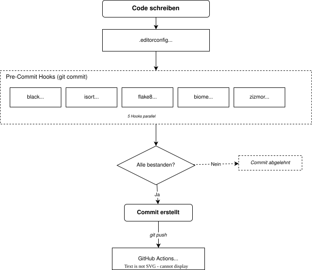

Lokaler Workflow - Analyse¶
Im Folgenden werden die lokalen Tools aufgezeigt, die auf dem Rechner des Entwicklers laufen - also bevor Code überhaupt gepusht wird. Hier findet das Shift-Left-Prinzip dementsprechend Anwendung: Fehler so früh wie möglich finden, bestenfalls noch vor dem Commit.
Übersicht - Lokaler Workflow¶
Der lokale Workflow gliedert sich in vier Phasen.
In Phase 1 schreibt der Entwickler Code, wobei .editorconfig dafür sorgt, dass der Editor grundlegende Formatierungsregeln (Einrückung, Zeilenenden, Zeichensatz) automatisch anwendet.
Beim git commit greifen in Phase 2 die Pre-Commit Hooks: Fünf Tools - black, isort, flake8, biome und zizmor - prüfen den Code automatisch auf Formatierung, Stil, Linting und Sicherheit.
Phase 3 überprüft: Schlägt ein Hook fehl, wird der Commit abgelehnt und der Entwickler muss die Probleme beheben, bevor er erneut committen kann. Erst wenn alle Prüfungen bestanden sind, wird der Commit erstellt.
In Phase 4 wird der Code per git push an GitHub übertragen, wo die GitHubs Workflows übernehmen.
Dieselben Tools (z.B. black, isort, ...) werden dem Prinzip Vertrauen ist gut, Kontrolle ist besser nach redundant, sowohl lokal als auch remote in GitHub Actions, eingesetzt. Lokal geben sie schnell Feedback und remote dienen sie als Sicherheitsschicht (falls beispielsweise ein Entwickler Pre-Commit nicht installiert hat).

Formatierung, Stil, Linting und Sicherheit¶
Die lokalen Tools lassen sich vier Kategorien zuordnen, die aufeinander aufbauen:
Formatierung (Formatting) bezeichnet die automatische, deterministische Umstrukturierung von Quellcode in ein einheitliches Layout - z.B. Einrückung, Zeilenlänge, Klammersetzung und Leerzeichen. Ein Formatter wie hier beispielsweise Black verändert dabei nicht die Semantik des Programms, sondern ausschliesslich dessen Darstellung (Black Dokumentation: "PEP 8 compliant opinionated formatter"). Ziel ist es, Diskussionen über Formatierung zu verhindern und konsistenten Stil in Code Reviews zu gewährleisten. PEP 8 begründet dies mit: "Code is read much more often than it is written" (PEP 8 - Style Guide for Python Code).
Stil (Code Style) geht weiter und umfasst Konventionen zur Strukturierung von Code - etwa die Reihenfolge von Imports, Namenskonventionen für Variablen und Klassen, oder die Bevorzugung bestimmter Sprachkonstrukte. Für Python definiert PEP 8 den Styleguide. PEP 8 ist es dabei wichtig, dass Konsistenz innerhalb eines Projekts wichtiger ist als die Einhaltung einzelner Regeln: "Consistency within a project is more important. Consistency within one module or function is the most important" (PEP 8 - A Foolish Consistency). Tools wie isort (Import-Sortierung) und flake8 (Stilprüfung) setzen diese Konventionen automatisiert durch.
Linting (Statische Analyse) ist die automatisierte Prüfung von Quellcode ohne dessen Ausführung. Die OWASP DevSecOps Guideline definiert Linting als "the automated checking of your source code for programmatic and stylistic errors [...] using a lint tool (otherwise known as linter). A lint tool is a basic static code analyzer". Linter wie flake8 erkennen potenzielle Fehler (z.B. undefinierte Variablen, unerreichbaren Code), Stilverstösse und unsichere Patterns, die ein Formatter nicht abdeckt (Flake8 Dokumentation: "Your Tool For Style Guide Enforcement"). Für JavaScript/CSS wird Biome eingesetzt.
Sicherheit (Security / SAST) beinhaltet die Erkennung von Sicherheitslücken durch statische Analyse. OWASP beschreibt Static Application Security Testing (SAST) als Werkzeuge, die "source code or compiled versions of code [analysis], to help find security flaws" (OWASP -- Source Code Analysis Tools). Im Django-Projekt setzt zizmor dieses Konzept spezifisch für die CI/CD-Pipeline um: Als "static analysis tool for GitHub Actions" prüft es Workflow-Dateien auf Schwachstellen wie gefährliche Trigger oder zu große Berechtigungen (zizmor Dokumentation). Dies betrifft das Thema Supply-Chain-Security - die Absicherung der Build- und Deployment-Infrastruktur, die selbst als potenzielle Angriffsfläche fungieren kann.
1. EditorConfig (.editorconfig)¶
Definition: Eine editorübergreifende Konfiguration, die sicherstellt, dass alle Entwickler dieselben Grundeinstellungen nutzen - unabhängig von ihrer Entwicklungsumgebung (z.B. VS Code, Vim, PyCharm, ...). EditorConfig ist die erste "Verteidigungslinie", die präventiv Formatierungsprobleme verhindert.
Konfigurationsdatei: .editorconfig
Beispiel-Snippet:
[*]
indent_style = space # Spaces statt Tabs
indent_size = 4 # 4 Spaces Einrückung
insert_final_newline = true # Datei endet mit Newline
trim_trailing_whitespace = true
end_of_line = lf # Unix-Zeilenenden (kein \r\n)
charset = utf-8
[*.py]
max_line_length = 88 # Black-Standard
[*.html]
indent_size = 2 # HTML: 2 Spaces
[Makefile]
indent_style = tab # Makefiles brauchen Tabs
Relevanz: Ohne EditorConfig würden verschiedene Entwicklungsumgebungen bzw. Editoren unterschiedliche Formatierungen erzeugen. Das führt zu folgenden möglichen Auswirkungen:
- Unnötige Diffs in Pull Requests (z.B. nur Whitespace-Änderungen)
- Fehlschlagende Linter-Checks in der CI
- Zeitverschwendung in Code Reviews
2. Pre-Commit Hooks (.pre-commit-config.yaml)¶
Git Hooks:
Git Hooks sind Skripte, die Git automatisch bei bestimmten Ereignissen ausführt - z.B. vor einem Commit (pre-commit), vor einem Push (pre-push) oder nach einem Merge (Git Hooks Dokumentation). Sie liegen im Verzeichnis .git/hooks/ eines Repositorys.
Definition:
Pre-Commit ist ein Framework, das die Ausführung solcher Git Hooks vereinfacht.
Statt manuell Shell-Skripte in .git/hooks/ zu pflegen, werden die Prüfungen deklarativ in einer Datei .pre-commit-config.yaml definiert (Konfigurationsreferenz).
Ein pre-commit-Hook wird vor dem Abschluss eines Commits auf Dateiänderungen ausgeführt: Gibt das Skript einen Fehlercode zurück, wird der Commit abgebrochen.
Konfigurationsdatei: .pre-commit-config.yaml
Installation (Quick Start):
Djangos Pre-Commit Hooks:¶
Folgende Pre-Commit Hooks werden im Django Projekt verwendet.
2.1 Black - Code-Formatierung¶
- repo: https://github.com/psf/black-pre-commit-mirror
rev: 26.1.0
hooks:
- id: black
exclude: \.py-tpl$ # Template-Dateien auslassen
Black ist ein Code-Formatter, der bis auf die Zeilenlänge keine Konfiguration der Formatierung erlaubt. Das kann die Projektarbeit effizienter machen, weil Diskussionen über Codestile ausbleiben.
Zusammenspiel mit Python mittels pyproject.toml:
[tool.black]
target-version = ["py312"]
force-exclude = "tests/test_runner_apps/tagged/tests_syntax_error.py"
2.2 blacken-docs - Code-Beispiele in der Dokumentation¶
- repo: https://github.com/adamchainz/blacken-docs
rev: 1.20.0
hooks:
- id: blacken-docs
files: 'docs/.*\.txt$'
args: ["--rst-literal-block"]
Formatiert Python-Code-Beispiele innerhalb der Dokumentation mit Black. So sind auch Docs-Snippets stets formatiert.
2.3 isort - Import-Sortierung¶
isort sortiert Python-Imports in eine standardisierte Reihenfolge:
- Standard-Library (z.B.
os) - Third-Party (z.B.
django) - Lokale Imports
Zusammenspiel mit pyproject.toml:
[tool.isort]
profile = "black" # Kompatibel mit Black formatieren
known_first_party = "django" # Django-Imports als "first party"
2.4 flake8 - Linting¶
Flake8 prüft Python-Code auf Fehler wie Stilverstöße (gemäß PEP 8: offizieller Python-Styleguide).
Konfiguration in .flake8:
[flake8]
exclude = build,.git,.tox,./tests/.env
extend-ignore = E203 # Konflikte mit Black vermeiden
max-line-length = 88 # Gleich wie Black
max-doc-length = 79 # Docstrings kürzer
per-file-ignores =
django/core/cache/backends/filebased.py:W601
2.5 Biome - JavaScript/CSS Linting¶
Biome ist ein Linter und Formatter für JavaScript und CSS.
Konfiguration in biome.json:
{
"files": {
"includes": [
"django/contrib/admin/static/admin/js/**/*.js",
"!django/contrib/admin/static/admin/js/vendor/**" // Vendor-Code ignorieren
]
}
}
2.6 zizmor - CI-Sicherheitstool¶
zizmor ist ein Sicherheitsanalysetool speziell für GitHub Actions Workflows. So prüft es die Workflows auf Schwachstellen und generell unsichere Praktiken. Dies ist ein Beispiel für Supply-Chain-Security: Die CI-Pipeline selbst wird als Angriffsfläche betrachtet und abgesichert.
Konkret wird (u.a.) folgendes überprüft:
- Unpinned Actions - Actions ohne festen Commit-SHA können manipuliert werden
- Dangerous Triggers -
pull_request_targetkann Code aus fremden Forks ausführen - Excessive Permissions - Workflows mit zu vielen Rechten
Konfiguration in zizmor.yml:
rules:
dangerous-triggers:
ignore:
- coverage_comment.yml # Bewusst ignoriert bzw erlaubt
- labels.yml
unpinned-uses:
config:
policies:
actions/*: ref-pin # Offizielle Actions: ref-pinning reicht
psf/*: ref-pin # PSF-Actions: ref-pinning reicht
3. Tox (tox.ini)¶
Definition: Tox erstellt isolierte virtuelle Umgebungen und führt darin Tests und andere Prüfungen aus. So stellt es sicher, dass beispielsweise Tests lokal und auf dem Server (als Teil der CI/CD Pipeline) identisch ablaufen. Hier ermöglicht Tox den Entwicklern, die Teile der Pipeline lokal zu reproduzieren. Jeder Entwickler bekommt dabei dieselbe Testumgebung mit den gleichen Dependencies (der jeweiligen Umgebung entsprechend). Insbesondere der Python-Code lässt sich lokal so auch gegen verschiedene Versionen testen.
Konfigurationsdatei: tox.ini
Umgebungen:
| Befehl | Aktion |
|---|---|
tox -e py3 |
Tests mit Standard-Python ausführen |
tox -e black |
Code-Formatierung prüfen |
tox -e flake8 |
Linting ausführen |
tox -e isort |
Import-Sortierung prüfen |
tox -e docs |
Dokumentation bauen + Rechtschreibung |
tox -e javascript |
JavaScript-Tests via npm |
tox -e zizmor |
CI-Sicherheitsscan |
Beispiel: Die Test-Umgebung